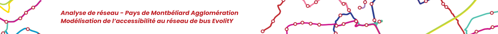

Les transports en commun constituent un levier essentiel pour assurer la mobilité quotidienne
des populations et réduire les inégalités d’accès aux services et aux emplois. Dans le contexte
actuel du changement climatique, encourager les populations à utiliser des modes de transports
en commun plutôt qu’individuels constituent de véritables enjeux territoriaux.
Dans le Pays de Montbéliard Agglomération (PMA), le réseau de bus évolitY structure une grande
partie des déplacements urbains et périurbains. Toutefois, la répartition spatiale des arrêts et
des lignes peut générer des disparités d’accessibilité selon les communes et les quartiers,
d’autant plus dans ce territoire majoritairement rural.
Ainsi, la question de recherche, à laquelle nous essayerons de répondre est la suivante :
Cette problématique vise à analyser conjointement la dimension spatiale de l’accessibilité au réseau de bus et les caractéristiques statistiques des populations concernées.
Mots clés : transports – bus – transports en commun – Pays de Montbéliard Agglomération – PMA – accès – mobilité urbaine – transports collectifs – desserte – territoire – urbain – périurbain – aménagement – mobilités – temp d’accès – isochrones – SIG – statistiques - ACP